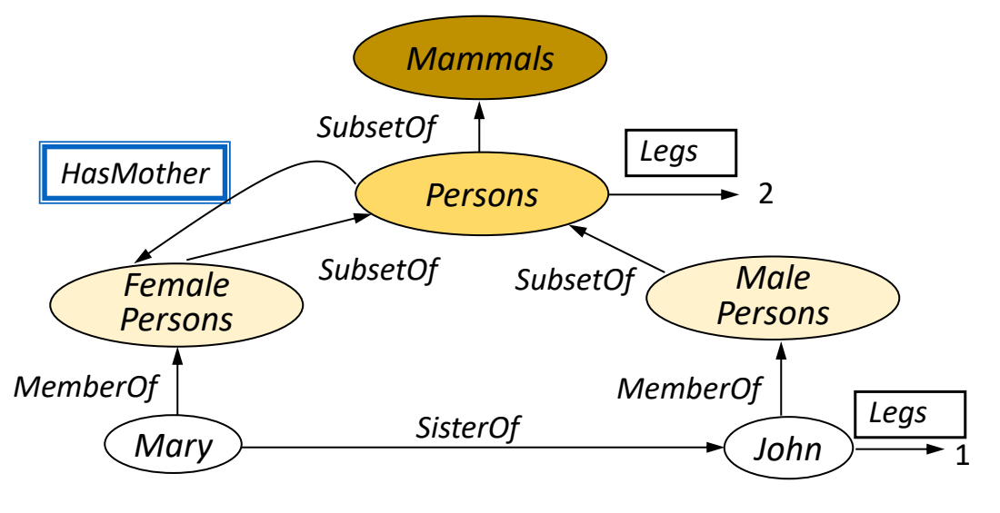

Semantic networks（語義網路；概念關係圖）
A semantic network represents entities（實體；被描述的對象）/concepts as nodes and relationships as labelled edges. Inheritance（繼承） and traversal（遍歷） help connect related knowledge.

MR-Day 2_JR_v1.pdf · PDF p.50 / printed slide 51 · original diagram cropped from the supplied slide, not redrawn. View full original slide

If the exam asks you to draw
- List the entities and classes. Put each in a node: Mary, John, Female Persons, Male Persons, Persons, Mammals.
- Label each relationship and its direction. Mary → MemberOf → Female Persons; Female Persons → SubsetOf → Persons. Individual membership and class hierarchy are different relations.
- Add the case’s specific relations. Mary → SisterOf → John. Do not reverse a relationship unless its meaning allows it.
- Add attributes and values. Persons → Legs → 2; John → Legs → 1. The lecture explicitly shows John’s individual value: do not erase it by blindly inheriting the general value.
- Check what can be inferred. Mary belongs to Female Persons, then Persons, then Mammals. Do not invent an extra fact or reverse the arrows.
Exam clue: “entities”, “relationships”, “nodes”, “labelled links”, “is-a”, “MemberOf”, “inheritance” → consider a semantic network/knowledge graph; justify it from the requested structure.
What the 5001 papers actually ask
- Official sample Q1(c), PDF pp.4–5: asks for a frame-based knowledge representation schema, with objects, relationships, qualitative slots and inheritance. Draw frames/slots; do not substitute a semantic network just because both show relationships. Frame explanation →
- Official sample Q2(c–d), PDF p.16: asks for system architectures, inputs/outputs, processes and knowledge structures. Use component boxes and labelled data arrows. Reasoning-system architecture →
- Generated practice 5001 Paper B Q1(b): explicitly asks for a small semantic network/knowledge graph of pump, model, part and procedure facts. This is revision practice, not the official sample or a prediction of the exam.
Read the lecturer’s network correctly
| Link | Meaning | Do not infer |
|---|---|---|
| Mary → MemberOf → Female Persons | Individual belongs to a class. | Mary is herself a class. |
| Female Persons → SubsetOf → Persons → SubsetOf → Mammals | Class hierarchy; Mary also belongs to Persons and Mammals. | All Persons are Female Persons. |
| Mary → SisterOf → John | Named relationship between two individuals. | John is SisterOf Mary. |
| Persons → Legs → 2; John → Legs → 1 | John has an explicitly shown individual value. | Overwrite John’s value with 2. |
How do labelled links represent connected knowledge?
- A semantic network gives links their meaning through relation labels（標籤；作比較的正確答案）. A line between Eye and Face is insufficient: is-a and part-of imply different things. Class（類別；分類目標） inheritance permits category membership to flow upward; composition describes containment and does not make a component a subtype of the whole.
- Instances and categories also differ. Alice member-of Person says Alice is one person; Student is-a Person says every student belongs to the broader category. Mixing these levels can create incorrect inheritance, such as treating an individual’s property as universal for every person.
- Networks are useful when the examiner wants relationships visible, but informal arrows do not automatically define an inference engine（推理引擎；套用知識得結論）. State the traversal or inheritance procedure and any exception/default handling. If formal consistency（一致性） and shared domain constraints（約束條件） matter, an ontology（本體；概念與關係的規範） may be the stronger representation.
Implementation steps and their purpose
- Identify classes and instances.
- Choose meaningful relationship labels.
- Draw the directed links and hierarchy.
- Separate class membership, is-a inheritance and part-of composition.
- State what can be inferred by following the links.
Prepare the data and validate the representation
Data, components and application
- Unlabelled links → label direction and semantics（語義；所表達的意思） → readers cannot infer what a connection means.
- Exceptions to inherited defaults → represent overrides → a general property may not hold for every subclass.
How to evaluate it
Check that each claimed inference follows the intended relation semantics. Informal networks need additional rules if stronger formal inference is required.
Build the answer in this order
- Extract entities.
- Label relations.
- Show useful paths/inheritance.
- Check meaning and exceptions.
Choose the representation from the task
Useful for showing associations or concept hierarchies when a visual relationship model is more helpful than flat records.
| Scenario cue | Suitable choice | Why it fits |
|---|---|---|
| Need visual associations/simple hierarchy | Semantic network | Nodes and labels clearly expose relationships |
| Need formal domain-wide validity（推論有效性） checking | Ontology | Explicit（明確；直接提供的資訊） class/property constraints support stronger consistency checks |
Diagnose: Diagram claims eye is a face
| What you observe | Why it happens | What to change | Why that helps |
|---|---|---|---|
| Diagram claims eye is a face | Composition labelled as inheritance | Use part-of and define roles | Components are not subclasses of their containing whole |
| Inherited default has exception | Default treated as universal | Record override at specific class/instance | Typical properties need not hold without exception |
Common wrong answers and the exact correction
- Is-a and part-of are different.
- A diagram of associations alone does not provide calibrated（校準；令量測或機率對應實際意義） probabilities.
An answer you could write
- Mary MemberOf Female Persons, Female Persons SubsetOf Persons and Persons SubsetOf Mammals imply Mary is a mammal. Keep John’s explicit Legs=1 value.
- I label relation direction and distinguish individual membership from class hierarchy before claiming any inherited property.
Where this is tested in the sample papers
ISY5001 Q1(c) — Frame（框架；附欄位的知識記錄） schema, slots, relationships and inheritance
What the question requires
- Identify the case objects: body parts, equipment and environment.
- Give each frame named slots, including qualitative（定性的；用類別或描述而非數值表達） states.
- Use a parent frame for shared properties.
- Label is-a and part-of relationships differently.
Proposed answer points
- BodyPart(name, position, recorded_time) can be a parent for Eye and Face. Equipment can be a parent for Monitor.
- Face may add distance/status; Monitor adds brightness/contrast; Environment adds ambient light. Link measurements to reference ranges.
Avoid: An eye is a body part, and is part of a face. These are different relationships. Do not replace a frame design with an unstructured object（客體；三元組終點） list.
Full question-to-concept map →